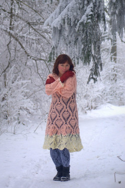

Доброго времени суток!
Меня зовут Алина и я очень люблю вязать. С детства вяжу разные вещи для себя, своих родных и друзей. Сначала я вязала спицами, а потом уже научилась вязать крючком, и у меня это здорово получается. Мой опыт начинался с носочков, шапок, шарфов, рукавиц и перчаток.
Если Вы хотите научиться вязать, то рекомендую начать с шарфа.
За тем я приступила уже к более объёмным работам: свитерам и даже платьям.
На фото Вы можете увидеть платье моей мечты! Оно связано крючком, очень тёплое и нарядное, отлично подходит для Новогодних праздников!